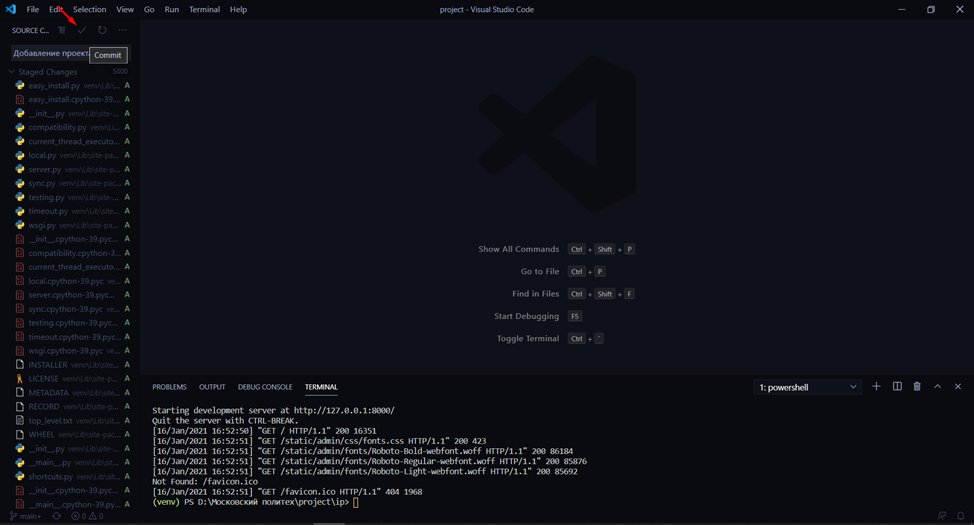
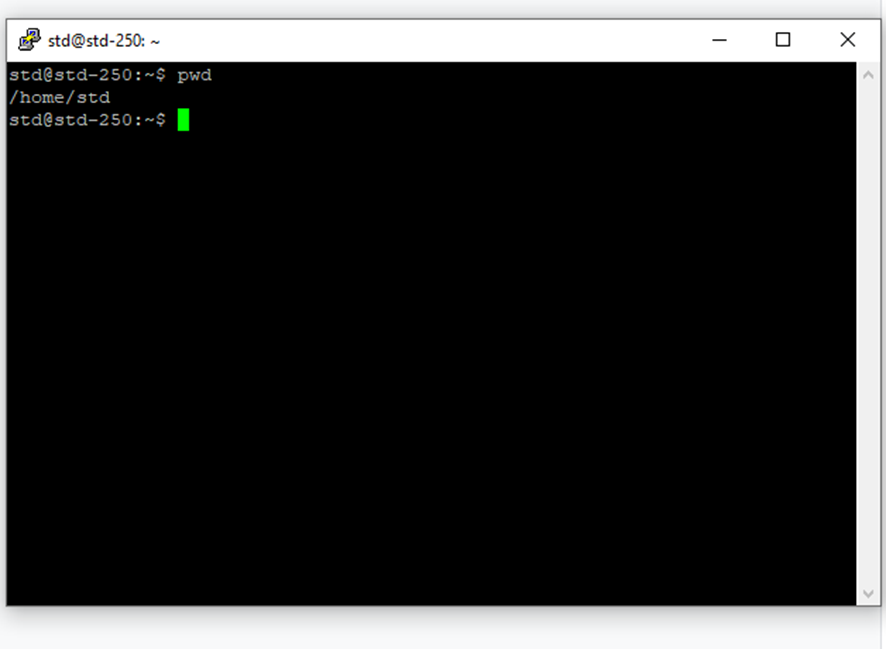

Загрузка ВЕБ проекта на FIT
Общая схема (в случае если вы выполняли проект локально на своем компьютере, либо на другом сервере)
Навигация по инструкции
- Подготовка локального проекта
- Перенос файлов на сервер fit.mospolytech.ru
- Создание виртуального окружения на сервере FIT
- Создание домена для доступа к сайту
- Тестирование и решение проблем
- Дополнительная литература
1. Подготовка локального проекта
a. Создание виртуального окружения
Открываем папку, в которой у вас хранится проект. Если вы склонировали проект с помощью команды git clone, открывайте папку склонированного проекта.
Открываем терминал. В данной инструкции показан терминал, встроенный в программу VSCode.
При помощи команды python -m venv venv, создаем виртуальное окружение
Активируем виртуальное окружение, при помощи команды ./venv/scripts/activate
Устанавливаем все необходимые библиотеки. Обычно при разработке программы вы по мере необходимости устанавливаете библиотеки, однако не всегда они нужны в итоговой версии. Рекомендуется при каждом добавлении новой библиотеки к проекту обновлять файл requirements.txt, а при сохранении версии проекта просматривать файл requirements.txt и актуализировать его (удалять библиотеки, которые в итоге были исключены, а также добавлять забытые зависимости).
b. Загрузка на GIT
Используем сочетание клавиш CTRL + SHIFT + G и открываем панель управления GIT
Добавляем все изменения в GIT
Вписываем название коммита
Сохраняем версию (коммит)
Отправляем изменения в глобальный репозиторий (на github или bitbucket)

Проверяем, что файлы успешно добавлены в репозиторий.
При сохранении коммита у вас могут возникнуть ошибки, необходимо внимательно читать сообщение в консоли. Если возникла ошибка, скорее всего ваши изменения не сохранились или не отправились. Необходимо разобраться в ситуации.
В данной инструкции показан способ через VSCode. Разумеется, вы можете сохранить все изменения через консоль Git вручную (рекомендуется всем научиться это делать и только потом использовать Git GUI).
Дополнительная литература:
2. Перенос файлов на сервер fit.mospolytech.ru
a. Через Filezilla
* Если вы работаете с системой контроля версий Git, переходите сразу к пункту b, где рассматривается вопрос работы с Git. Причины указаны в конце данного подпункта.
Создаем папку “project” для проекта в каталоге std.
Переходим в данный каталог
Загружаем файлы проекта
Обратите внимание, что “минусом” данного способа является то, что может произойти ситуация, когда вы случайно скопировали не ту версию файлов, какие-то файлы забыли скопировать, а какие-то случайно удалили. В случае с обновлением из репозитория такие ситуации контролировать намного проще и при удалении каких-либо файлов в случае если они ранее были сохранены в репозитории, их можно восстановить.
А в случае, если папка содержит репозиторий и вы ее переносите через FTP на сервер, возможны ошибки из-за различных конфликтных ситуаций, с которыми вам справится будет довольно тяжело из-за отсутствия опыта.
Таким образом, данный способ подходит для загрузки файлов проекта на сервер (без копирования папки .git).
Далее два варианта:
Папка проекта на сервере управляется системой контроля версий, привязана к тому же репозиторию, что и ваша локальная папка. Тогда вы через консоль Putty выполняете команду git status и далее сохраняете все изменения в части новых файлов, которые вы выполнили.
Вы просто выложили папку, чтобы прикрепить к ней домен и показать преподавателю. Вы можете создать в этой папке отдельный репозиторий для управления. Но возникает вопрос почему у вас проект не управляется Git при разработке.
Через SSH + Git (рекомендуется делать так)
Подключитесь через OpenVPN (см. раздел VPN в личном кабинете). В случае, если вы хотите подключиться из Вычислительного центра университета, VPN подключать не требуется.
Открываем Putty и вписываем адрес хоста, который указан на https://fit.mospolytech.ru/systems/servers
Нажимаем “Open” для подключения по SSH
В поле login указываем std
Если у вас не создан пароль, то создаем его на fit.mospolytech.ru
Для удобства вы можете закрепить программу Putty в панели задач и у вас будет быстрый доступ. Обратите внимание, что вы можете одновременно запускать несколько подключений через Putty.
Также в разделе Connection-->Data вы можете указать свой логин, чтобы не вводить его каждый раз при запуске программы:
Далее не забудьте сохранить сессию:
Ура! Мы вошли
Копируем данную ссылку с git-репозитория, чтобы после ее вставить в командную строку в putty консоли
Прописываем git clone *ваша ссылка*, для загрузки репозитория на сервер
Проект успешно передан на сервер
При помощи команды ls проверим, что наш проект загружен на сервер
Перейдем в эту папку и проверим все файлы.
Если на сервере уже проект склонирован и вам нужно обновить файлы, то заходите в папку проекта и выполняете команду “git pull”. Сохраненные на локальном компьютере изменения и отправленные в глобальный репозиторий на github (в данном случае), будут обновлены при выполнении данной команды. В случае, если ваш репозиторий на сервере содержит несохраненные изменения (можно узнать с помощью команды git status), Git сообщит вам об этом и нужно будет сначала сохранить изменения, а только потом обновлять (запрашивать) изменения из глобального репозитория.
Дополнительная литература
3. Создание виртуального окружения на сервере FIT
При создании ваших сайтов, приложений, программы вы используете конкретные версии библиотек, языков. Для обеспечения работоспособности программ при переносе с одного сервера, компьютера на другие (например, когда вы разрабатываете проект локально, а запускаете на боевом сервере, либо когда разработка идет в команде), используются виртуальные окружения, в которые вы можете установить любой набор необходимых вам библиотек, причем конкретные версии библиотек (если не указываем версию, устанавливается последняя актуальная). При этом на одном сервере или компьютере вы можете иметь несколько таких окружений и быстро переключаться при работе с разными проектами.
Создаем виртуальное окружение в созданной папке проекта при помощи Putty
Активируем виртуальное окружение
Устанавливаем все необходимые библиотеки (они указаны в файле requirements.txt, который вы предварительно создали и сохранили в систему контроля версий Git) с помощью команды
pip install -r requirements.txt
Обратите внимание, что название “requirements.txt” общепринятое, но не обязательное. Вы можете использовать и другое (однако при этом в документации к проекту, в разделе для установки вы должны обратить на это особое внимание пользователей).
Если файл requirements.txt лежит на в корне папки, то нужно дополнительно указать путь до этого файла. Например, если папка называется “req”, то команда будет “pip install -r req/requirements.txt”. Либо вы в консоли сначала переходите в эту папку (cd req) и тогда выполняете “ pip install -r requirements.txt”.
Если вы не используете систему контроля версий Git и файл requirements.txt, вы можете установить каждый пакет отдельно.
Для проверки можно распечатать все установленные пакеты с помощью команды pip freeze
4. Создание домена для доступа к сайту
На https://fit.mospolytech.ru/systems/servers нажимаем на кнопку добавить домен
Выбираем необходимую версию Python
Пусть до проекта - в случае Django это папка, в которой лежит файл manage.py
После того, как указали все необходимое нажимаем “Добавить”
5. Тестирование и решение проблем
После загрузки проекта на сервер и создания домена (ссылки на проект) необходимо убедиться, что проект работает корректно, нет ошибок, связанных с переносом проекта на другой сервер.
5.1 Чек-лист
Для этого предлагаем воспользоваться следующим чек-листом:
Главная страница и другие открываются корректно. Пройтись по гиперссылкам, чтобы проверить, что URL проекта работают корректно.
Проверка статический файлов (картинки, ссылки на файлы)
- Визуальная проверка
- В консоли браузера отсутствуют ошибки 404. Например, потому что забыли в Git положить какие-то файлы или же забыли их перенести, если делали через FTP
- В коде все ссылки на ресурсы являются относительными или прямая ссылка на внешний ресурс. То есть нет ссылок на ваш личный компьютер
- Проверка медиа файлов (то, что грузит пользователь через ваш проект)
- Проверка базы данных
При разработке проекта на нескольких компьютерах необходимо следить за структурой базы данных, т.к. в некоторых случаях ваш проект не будет работать вообще (а не только раздел, где были внесены изменения в базу). Если говорить о фреймворке Django, то в нем это реализуется через механизм миграций. При внесении изменений в структуру базы данных вы создаете файл миграции и далее выполняете их по очереди на новом сервере. https://django.fun/docs/django/ru/3.0/topics/migrations/
Если вам необходимо перенести базу данных, вы должны создать дамп локальной базы и далее перенести данные в базу на сервере.
5.2 Просмотр логов
Если у вас возникла ошибка 502 или иная другая, необходимо обратиться к файлу логов для просмотра сведений о возникшей ошибке. Необходимо найти файл “/var/log/unit.log”, он находится в корне сервера (а не в папке ), поэтому в начале пути вы видите “/”
Команда pwd поможет вам узнать путь до текущей папки в консоли
Переместиться в корень можно с помощью команды “cd /”
Логи можно посмотреть с помощью команды:
sudo tail -f /var/log/unit.log
Выход из tail - комбинация Ctrl+C
Итак, в самом файле логов вам необходимо найти последние сообщения, понять в чем их суть и исправить ошибку.
Частая ошибка - не установлена та или иная библиотека, установлена иная версия библиотеки (именно для этого в файлике requirements.txt мы также указываем конкретную версию библиотеки). Если вы не указываете конкретную версию, система установит последнюю актуальную, а вы, возможно, разрабатываете проект на более старой.
Подсказка. Скопируете текст ошибки и попробуйте найти информацию через поисковик. Разработчики часто консультируются друг у друга в интернете, поэтому множество проблем решаются очень быстро, т.к. они типовые.
5.3 Консоль putty зависла и не отвечает
Это нормально, соединение обрывается по тайм-ауту. Необходимо заново подключиться. Для удобства вы можете закрепить программу Putty в панели задач и у вас будет быстрый доступ. Обратите внимание, что вы можете одновременно запускать несколько подключений через Putty.
Также в разделе Connection-->Data вы можете указать свой логин, чтобы не вводить его каждый раз при запуске программы:
Далее не забудьте сохранить сессию:
5.4 Другая версия Python
В системе FIT установлено несколько версий языка Python, вы можете выбрать любую установленную. Для этого при создании виртуального окружения необходимо указать конкретную версию, а именно в случае если нужна версия 3.1 вместо python указать python3.7
5.5 Забыли или не подходит пароль от SSH, FTP
Все просто - заходите в личный кабинет и меняете. Пароль обновится сразу. Обратите внимание, что мы НЕ рекомендуем использовать простые пароли. Например, 12345678 и подобные. Это не безопасно. Другие студенты и злоумышленники могут получить доступ к вашей виртуалки и выложить там некорректный контент, а вам потом сложно будет доказать, что это сделали не вы лично. Однако для тестирования системы (когда вы не понимаете что идет не так), создание простого пароля помогает убедится, что с авторизацией и аутентификацией на сервере все в порядке. А у вас на клавиатуре залипают клавиши, включен Caps Lock или выбран другой язык ввода.
5.6 Я точно все делаю правильно, но почему-то не работает
- Предлагаем нажать на кнопку “обновить сервер”. Возможно какие-то стандартные настройки виртуалки сбросились или не обновились
- Поискать ответ в документации еще раз https://fit.mospolytech.ru/systems/documentation
- Задать вопрос по почте ist@fit.mospolytech.ru (с этой почты приходят все письма с сервера)
- Обратиться к Даньшиной Марине Владимировне по почте, телеграму, ВКонтакте
5.7 Убедитесь что вы сгенерировали папку со статикой (static)
Самая распространенная проблема, с которой сталкиваются многие.
В терминале выполняем команду python manage.py collectstatic.
После чего у нас появляется папка static.
Дописываем необходимые строки в файлы:
SETTINGS.PY
URLS.PY
5.8 Редактор VIM
Выход из редактора Vim - необходимо в режиме ввода команд набрать “:q” , либо “:q!”, если вы вносили какие-то изменения (сохранять изменения не нужно).
Переход в режим редактирования Vim - нажать на букву i
Выйти из режима редактирования - Esc
Более подробную информацию о редакторе Vim можно найти в сети Интернет, например, на этом сайте https://ru.wikibooks.org/wiki/Vim